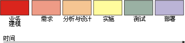
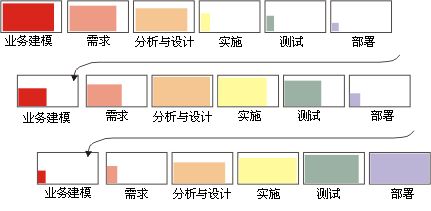
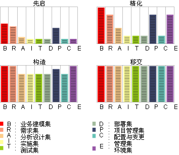

| 概念：迭代 |
 |
|
| 相关元素 |
|---|
什么是迭代？
迭代包含开发活动，这些活动产生产品发行版 －
一个稳定、可执行的产品版本，包括使用此发行版必需的所有其他外围元素。因此在某种意义上，开发迭代是至少通过以下所有规程的完整过程：需求、分析与设计、实施和测试。它本身很像一个小型的瀑布式项目。请注意，在计划每次迭代时建立评估条件。发行版将计划可论证的功能。迭代的持续时间将随项目规模和性质的不同而不同，但可能
每个迭代中都将构造多个工作版本，如集成构建计划中对迭代所指定的。这是 Rational Unified
Process（RUP）中建议的持续集成方法的结果：当单元测试的组件可用时，集成它们，然后产生工作版本并用于集成测试。这样，集成软件的功能随迭代发展而向着计划迭代时设置的目标发展。您可能会争辩说每个工作版本本身就表示一个小型迭代，但不同之处在于所要求的计划和所执行评估的正式程度。每天构造工作版本在某些项目中可能是适合且方便的，但它们不能代表
RUP 定义的迭代 － 除了可能有极小的一个人的项目。即使对于小型的多人项目（例如，五个人建立 10000 行代码），也很难在少于一周的时间内实现迭代。有关原因的说明，请参阅 为什么迭代？传统上，对项目进行组织来按顺序完成每个规程（每个规程有且仅有一次）。这会导致瀑布式生命周期：  在实施后期，当首次建立产品并开始测试时，这通常会导致集成“堆积”。一直隐藏于整个分析、设计和实施过程中的问题浮现出来，然后项目就逐渐停下来，因为冗长的错误修正周期开始了。 更灵活（并更少风险）的进展方法是几次通过各种开发规程，更好地理解需求，设计健壮的体系结构，发展开发组织并最终交付逐步完整的一系列实施。这被称为迭代方式生命周期。 将每次完成整个进程规程序列称为一次迭代。  因此，从开发的角度来看，软件生命周期是连续的迭代，通过迭代递增地开发软件。每次迭代都以得出可执行产品的发行版为结束。此产品可以是完整远景的子集，但从某个设计或用户角度来说是有用的。每个发行版都带有支持工作产品：发行版描述、用户文档、计划等，以及更新的系统模型。 此迭代方法的主要结果是早前描述的工作产品，它们随时间的推移而发展和完善（如下图所示）。  信息集随开发阶段演进。 次要里程碑每次迭代以次要里程碑为结束，在此相对于此特定迭代的目标成功条件来评估迭代的结果。 |

© Copyright IBM Corp. 1987, 2005 All Rights Reserved |